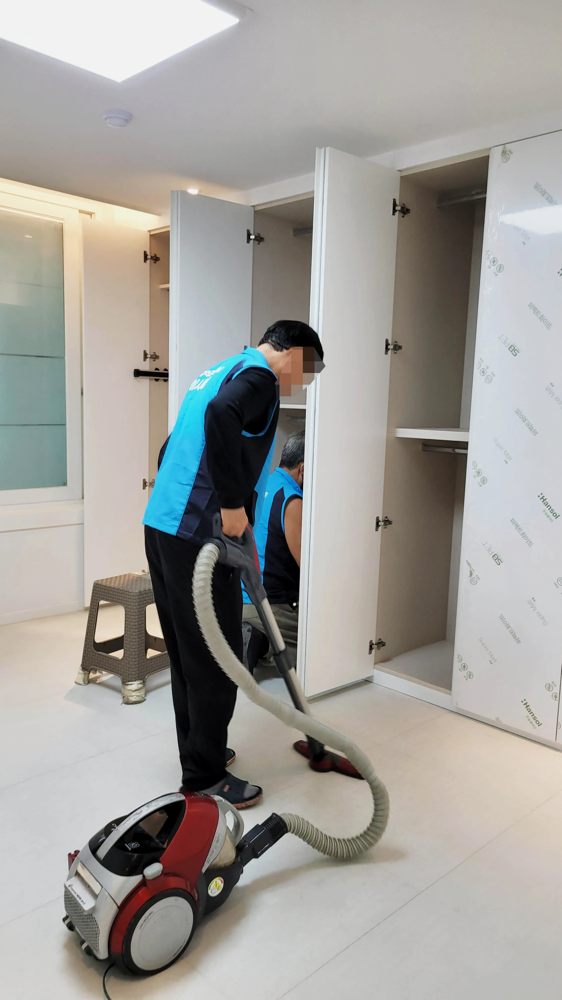
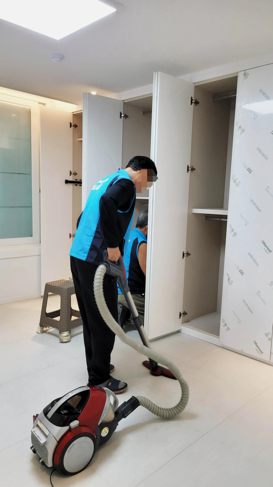
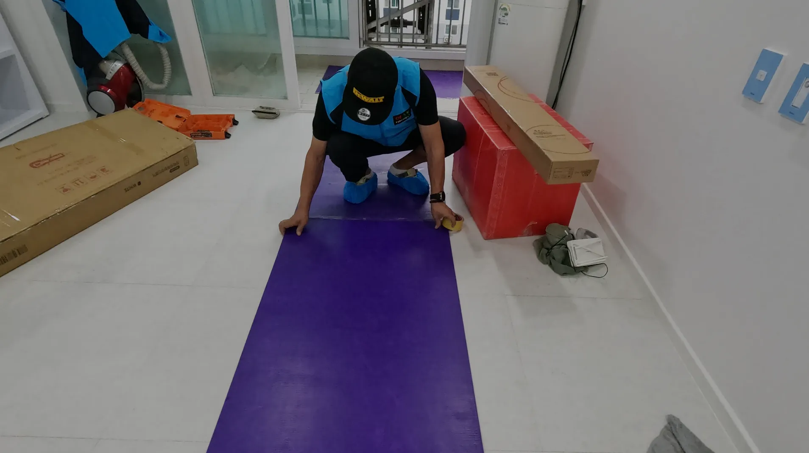
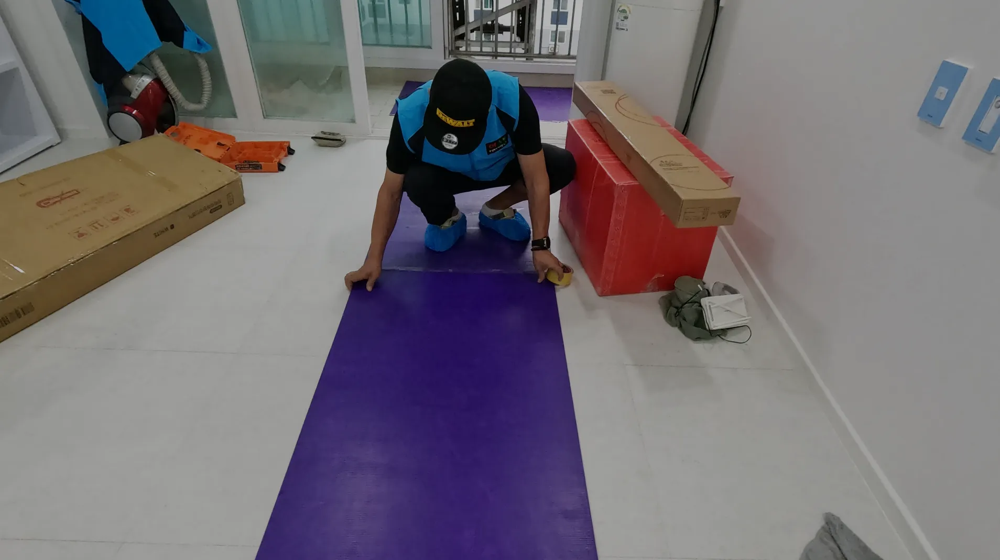

문형동포장이사

문형동 포장이사비용견적 잘내는 업체문형동포장이사이사 준비를 하다 보면 고층 아파트나 빌라로 이사할 때 짐 운반 문제 때문에 고민이 많아지죠. 이럴 때 활용할 수 있는 것이 바로 사다리차 이사입니다. 사다리차 이사는 말 그대로 사다리처럼 생긴 특수 장비를 이용해, 창문이나 발코니로 짐을 안전하게 올리고 내리는 서비스입니다. 특히 엘리베이터가 작거나, 계단만 이용해야 하는 고층 이사에서 매우 유용합니다. 덕분에 무거운 가구나 큰 가전제품도 안전하게 이동할 수 있습니다. 이사를 준비할 때는 먼저 사다리차 견적 비교를 통해 합리적인 가격과 안전한 서비스를 제공하는 업체를 선택하는 것이 중요합니다. 무료 견적 서비스를 활용하면, 여러 업체의 가격과 장비, 인력 상황까지 한눈에 비교할 수 있어 시간과 비용을 절약할 수 있습니다. 또한, 사다리차 이사는 전문 인력이 운영하기 때문에 안전성이 높습니다. 특히 고층 이사에서는 작은 실수도 큰 사고로 이어질 수 있기 때문에, 전문 업체를 선택하는 것이 필수입니다. 마지막으로, 이사 당일에는 사다리차 설치 위치와 작업 동선을 미리 확인하고, 필요한 물품을 분류해 두면 더욱 효율적인 이사가 가능합니다. 고층 이사라고 해서 스트레스 받을 필요 없이, 사다리차 이사 서비스를 활용하면 안전하고 신속하게 이사를 마칠 수 있습니다. 무료 견적을 활용하며, 정리하면, 고층 아파트 이사, 사다리차 이사 비용 비교, 무료 견적 신청을 활용하면 안전하고 편리하게 이사를 진행할 수 있
용 비교”와 “포장이사 무료견적” 키워드로 검색하면 빠르고 쉽게 정보를 얻을 수 있답니다. 진행 상황을 확인하고, 추가 요청 사항이 있으면 즉시 전달하는 것이 좋습니다. 포장이사는 단순 운송이 아니라 포장, 운송, 정리까지 책임지는 서비스이므로, 원활한 소통이 중요합니다.
문형동 포장이사비용견적 잘내는 업체

얼마 전 저희 가족이 고층 아파트로 이사를 하면서 사다리차 이사를 처음 이용해봤습니다. 솔직히 처음엔 조금 걱정이 되었어요. “짐이 잘못되면 어쩌지?” 하는 마음이 컸거든요. 하지만 막상 전문가들이 운영하는 사다리차 서비스를 보니 걱정이 싹 사라지더라고요. 무거운 가전, 커다란 장롱도 안전하게 창문을 통해 옮길 수 있어서 정말 신기했습니다. 엘리베이터가 작거나 계단밖에 없는 집이라면, 사다리차는 거의 필수 아이템이에요. 때문에, 전문가에게 맡기는 게 훨씬 안심됩니다. 결론적으로, 고니다. 특히 고층 이사에서는 작은 실수도 큰 사고로 이어질 수 있기 세층 이사나 무거운 가구 이동이 필요한 경우에는 사다리차 이사 + 견적 비교 서비스를 꼭 활용하시길 추천드려요. 저희처럼 처음 이용하는 분들도 안전하고 효율적으로 이사를 마칠 수 있습니다.
🚛100% 무료견적 알아보기🚛 

문형동 포장이사비용견적 잘내는 업체얼마 전 저희 가족이 고층 아파트로 이사를 하면서 사다리차 이사를 처음 이용해봤습니다. 솔직히 처음엔 조금 걱정이 되었어요. “짐이 잘못되면 어쩌지?” 하는 마음이 컸거든요. 하지만 막상 전문가들이 운영하는 사다리차 서비스를 보니 걱정이 싹 사라지더라고요. 무거운 가전, 커다란 장롱도 안전하게 창문을 통해 옮길 수 있어서 정말 신기했습니다. 엘리베이터가 작거나 계단밖에 없는 집이라면, 사다리차는 거의 필수 아이템이에요. 때문에, 전문가에게 맡기는 게 훨씬 안심됩니다. 결론적으로, 고니다. 특히 고층 이사에서는 작은 실수도 큰 사고로 이어질 수 있기 세층 이사나 무거운 가구 이동이 필요한 경우에는 사다리차 이사 + 견적 비교 서비스를 꼭 활용하시길 추천드려요. 저희처럼 처음 이용하는 분들도 안전하고 효율적으로 이사를 마칠 수 있습니다.
포장이사 무료견적 서비스
| 문형동포장이사 | 문형동이사업체 | 문형동이삿짐센터 |
|---|---|---|
| 문형동포장이사 | 포장이사비교견적 | 이사무료견적 |
| 문형동이사업체 | 이삿짐센터 | 포장이사업체비교 |
| 문형동이삿짐센터 | 포장이사가격 | 이사업체추천 |
 

FAQ
전국 어디든 100% 무료 비교견적 가능합니다.
포장이사는 전문 팀이 짐 포장부터 운송, 정리까지 전 과정을 책임지는 서비스입니다. 일반 이사는 운송만 제공하는 경우가 많아, 포장과 정리를 직접 해야 하므로 체력과 시간이 많이 필요합니다. 포장이사를 이용하면 시간과 비용을 절약하면서 안전하게 이사를 진행할 수 있습니다.